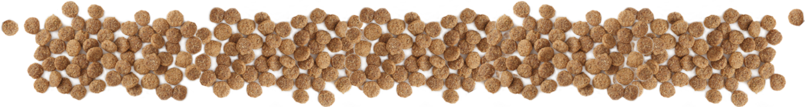

The pancreas is an organ that fulfils two very important roles in dogs - firstly, it secretes hormones like insulin and glucagon to help control blood sugar level and, secondly, it produces enzymes to help in the breakdown of carbohydrates, proteins and, especially, fats.
Any time the pancreas becomes inflamed, it is called pancreatitis and when that occurs, the flow of enzymes into the digestive tract can become disrupted, forcing the enzymes out of the pancreas and into the abdominal area. These enzymes can then begin to break down the fat and proteins in the other organs, as well as in the pancreas itself and the results can be very severe.
Acute vs Chronic
Pancreatitis is generally described as being either acute and chronic. Acute pancreatitis is an isolated episode of usually severe pancreatic inflammation while chronic pancreatitis is a longer standing inflammation which can continue for months or even years.
It's important to note, though, that acute and chronic pancreatitis are not mutually exclusive - acute pancreatitis, for example, may lead to chronic pancreatitis and it is possible for dogs with chronic pancreatitis to experience episodes of acute pancreatitis.
Symptoms
In both cases, the most common signs of pancreatitis are fever, vomiting, diarrhoea, loss of appetite, weight loss, dehydration, lethargy and abdominal pain (especially after eating).
If you suspect your dog is suffering from pancreatitis, it is very important that you first seek the advice of your vet in order to confirm the diagnosis and ensure that all necessary medical steps are taken before moving on to the dietary measures suggested below.
Causes
There are several possible causes of inflammation to the pancreas. High levels of fat in the blood (lipemia) is the most common cause but trauma to the pancreas, hypercalcemia (excessive calcium in the blood), and some drugs and toxins can also result in pancreatitis.
Acute pancreatitis is most common around the christmas break as millions of dogs are treated to large amounts of very fatty leftovers which their bodies simply can't handle.
Although pancreatitis can occur in any dog, it is more common in females than males and older, overweight and relatively inactive dogs are particularly at risk. Some breeds are also more prone to pancreatitis than others with Miniature Schnauzers, Miniature Poodles and Cocker Spaniels having the highest incidence.
Treatment
Whether your dog is suffering from a bout of acute pancreatitis or a long-running chronic episode, your first step should always be to consult your vet. For acute cases, vets will usually withhold food and fluids for a day or two to give the pancreas time to rest and to slow the production of digestive enzymes. Your vet may administer drugs for pain and/or to help ease nausea and vomiting. In some cases, IV fluids may also have to be given.
Once back home, it is important to follow your vet's instructions until your dog is back on his feet.
Following an acute episode, your vet will likely recommend a prescription diet specifically designed for dogs recovering from pancreatitis. Although we at All About Dog Food are not the biggest fans of prescription diets (find out why here), we would recommend sticking with their recommended food at least until the episode has subsided, after which we can start to look at a more nutritious, long term solution.
Don't forget to provide plenty of fresh, clean water to avoid dehydration.
Dietary management and prevention
Getting the diet right is absolutely crucial for both managing chronic pancreatitis and preventing future acute episodes. The primary aim should always be to minimise the workload on the pancreas by only giving it nutrients that it can easily process and avoiding anything that could put it under unnecessary strain.
Please note that these guidelines are meant for adult maintenance only. For puppies, nursing females or for dogs with other concurrent health conditions, it is best to consult your vet.
So what are the options?
Option 1: Prescription diets
There are plenty of prescription diets out there specifically designed to manage pancreatitis and for many dogs they undeniably work well. Most vets will, of course, recommend this option but what they probably won't tell you is that many over-the-counter foods fulfil essentially the same nutritional criteria as the prescription diets and can be used to effectively manage pancreatitis at a fraction of the price.
Option 2: Over-the-counter dog foods
As we mentioned above, the main dietary aim is to make life easy for the pancreas and although the specialist prescription diets can do that admirably, so can many regular pet foods.
Fat
Since one of the pancreas' main roles is the breakdown of fats, the easiest way to reduce its workload is to feed a low fat diet. High quality named animal fats are also better than lower grade vegetable fats or fats from unknown sources.
Digestibility
A food that is easy to digest is good for all dogs but for dogs with pancreatitis, it's really essential. Look for foods with good, bio-appropriate ingredients and try to avoid any of the nasties (the ingredients we highlight in red and yellow) that can put excessive strain on the digestive system.
Protein
The pancreas also helps to digest proteins so you will want to avoid foods with very high protein levels. With protein, though, quality is always much more important than quantity. The best protein for dogs comes from high end, named meat ingredients. If the food contains too many plant protein supplements (like pea protein, maize protein, soya etc) that's generally not a great sign.
Carbs
Less carbs also means less work for the pancreas so avoid foods with high percentages of NFE carbs or too many starchy 'fillers' like white rice, white potato, maize, tapioca, pea starch etc.
Sugar
Added sugars in dog foods are never a good thing but for dog's with pancreatitis they are certainly worth avoiding.
To summarise, you're looking for a food that is...
The button above will take you to a list of foods that tick these boxes but the list is not exhaustive so you may also want to ask your favourite dog food manufacturers if they have something that would also fit the bill.

Home-prepared food
A suitable home prepared diet, be it cooked or raw, can work wonders for dogs with digestive problems like pancreatitis but careful planning is crucial. The points above are a good place to start but to fully cover recipe formulation for pancreatitic dogs is, frankly, an article in itself which will have to go on to the to-do list for now. In the meantime, though, this page provides a fairly comprehensive guide on the subject.
Treats, leftovers and tidbits
Be sure to avoid any treats, tidbits and table scraps that are high in fat or of a low quality - the Treat Directory will help you to find suitable alternatives. Make sure other family members and friends are also onboard with this as even a slight indiscretion cold result in another bout of pancreatitis.
It is also important to make sure your bins and pet food storage containers are well and truly dog-proof.
Supplements
Certain supplements may also help reduce the risk of acute pancreatitis or control the effects of chronic pancreatitis. You might be able to find them included in complete foods or you can add them to your dog's diet yourself.
Pancreatic digestive enzyme supplements have been reported to help some dogs with pancreatitis while fish body oils (such as salmon oil or EPA oil but not cod liver oil), can help to lower blood lipid levels which may reduce the workload on the pancreas.
Whatever food you decide to go with, be sure to introduce it gradually (over the course of at least a week or two) to give the system plenty of time to adjust and to make it easier for you to spot and rectify any potential issues early on. You can find our guide to changing diets here.
Your experiences
If your dog has suffered with pancreatitis, we would love to hear from you either in the comments section below or on The Pancreatitis Thread on the forum. What worked and what didn't? How would you do things differently in the future? Please do let us know as your tips could make all the difference to other dog owners out there.
 In both cases, the most common signs of pancreatitis are fever, vomiting, diarrhoea, loss of appetite, weight loss, dehydration, lethargy and abdominal pain (especially after eating).
In both cases, the most common signs of pancreatitis are fever, vomiting, diarrhoea, loss of appetite, weight loss, dehydration, lethargy and abdominal pain (especially after eating).